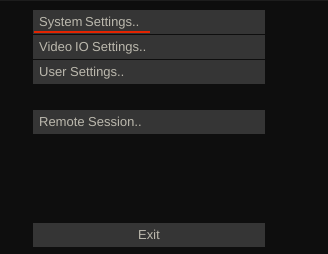
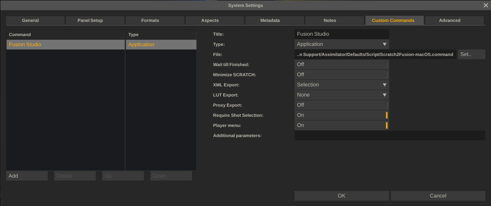
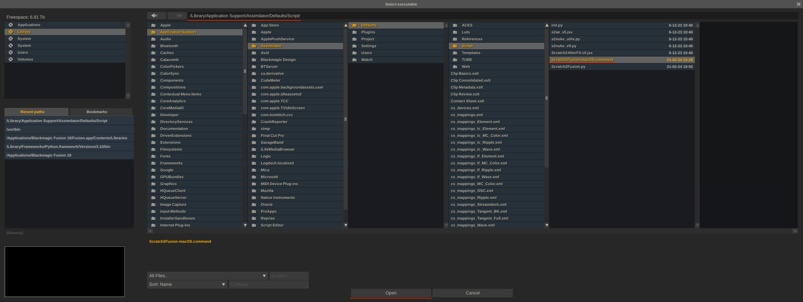
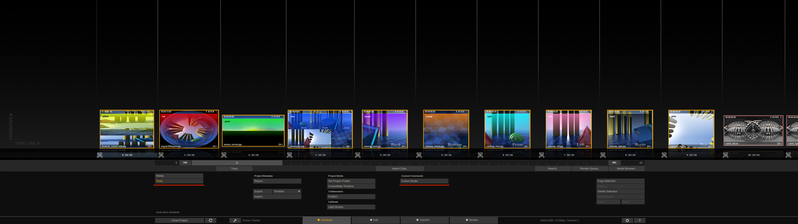
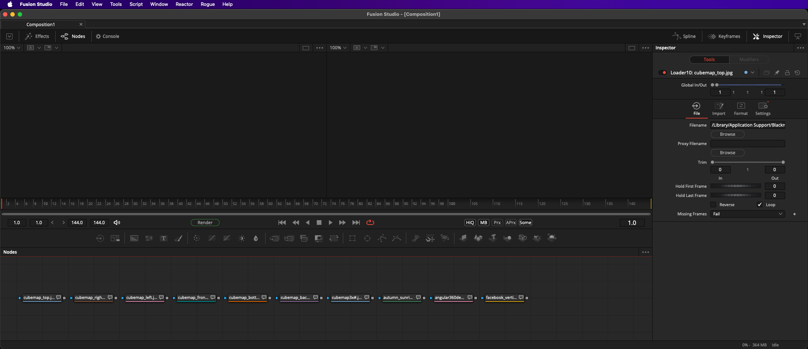

Doc Created: 2024-04-08
Doc By: Andrew Hazelden andrew@andrewhazelden.com
This script imports Assimilate Scratch/LiveFX content into BMD Fusion Studio.
Each clip is created as a Loader node in Fusion. The filename, tile color, and comment attributes are assigned to each node.
Copy the included scripts into the "Assimilator/Defaults/Script/" folder on your hard disk.
On macOS this folder is located at:
/Library/Application Support/Assimilator/Defaults/Script/
On Windows this folder is located at:
C:\Program Files\Assimilate\Settings\Script\
How to Enable the "Scratch to Fusion" script:
Launch BMD Fusion Studio and Assimilate Scratch/LiveFX.
Once Assimilate has launched, click on the "System Settings..." button on the splash screen.


Add a new Custom Command entry:
MacOS Custom Command:
Title: Fusion Studio
Type: Application
File: /Library/Application Support/Assimilator/Defaults/Script/Scratch2Fusion-macOS.command
XML Export: Selection
Windows Custom Command:
Title: Fusion Studio
Type: Application
File: C:\Program Files\Assimilate\Settings\Script\Scratch2Fusion-Win.bat
XML Export: Selection
To define the File attribute, click the "Set" button.
Then in the path entry text field at the top-center of the dialog paste in the text:
macOS Path:
/Library/Application Support/Assimilator/Defaults/Script/Scratch2Fusion-macOS.command
Windows Path:
C:\Program Files\Assimilate\Settings\Script\
Make sure the file "Scratch2Fusion-macOS.command" or "Scratch2Fusion-Win.bat" is selected. Then press the "Open" button to close the dialog.



The "Scratch2Fusion-Win.bat" script on Windows expects your Python 3 executable to be in the PATH environment variable, and to have the filename of "python.exe". You can revise the script if your executable is named "python3.exe" or you want to use an absolute filepath.
If you click on the "Fusion Studio" custom command button and see the command prompt based error message "Could not connect to the foreground Fusion composite" it means the Fusion Render Node process running on the same system intercepted the content that was being passed to Fusion Studio. Quit the Fusion Render Node process and things should work as expected.
If you click on the "Fusion Studio" custom command button and see the command prompt based error message "the following arguments are required: xml_path" it means you need to go back and adjust the custom command parameters. Change the "XML Export:" setting to "Selection".